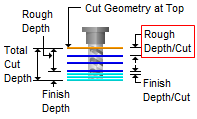
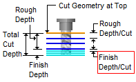

The following Cut Parameters tab allows you to define the cut parameters for the current 4 Axis Engraving operation. You can set Global Parameters and various Cut Control parameters.
Dialog Box: Cut Parameters tab, 4 Axis Engraving Operations |
Tolerance This is the allowable deviations from the actual part geometry. |
For Cut Direction, select Natural to follow the direction as it is defined by the start/end points of the selected regions. Select Reversed to cut in the opposite direction. |
The Location of Cut Geometry can be set to At Top (top Z level), At Bottom (bottom Z level) or Pick Top (specifying the Z location) by entering a Z value location or by selecting the pick Location of Cut Geometry At Top This uses the Z location of the selected Machining Feature/Region as the top of cut. The generated cuts will start at this Z location and cut down in Z to the specified total cut depth. At Top is typically used when you select the top edge as your machining region. Location of Cut Geometry At Bottom This uses the Z location of the selected Machining Feature/Region as the bottom of cut. The generated cuts will be above the selected machining region and last cut would be at the Z location of the specified region. At Bottom is typically used when you select a pocket bottom at your machining region. Location of Cut Geometry Pick Top This allows you to specify the Top of Cut for the selected Machining Feature/Region and is typically used when the selected region is not at top or bottom. The generated cuts will start at this specified R location and cut down to the specified total cut depth. This would be useful when the selected machining region is at the bottom edge of a fillet or chamfer. Location of Cut Geometry When two or more curves are selected as Machining Features/ Regions, and using Pick Top for Location of Cut Geometry, sets the Top of cut for all regions at the same R level. You can enter the Pick Top R value or it can be set by selecting the pick |
The Cut Depth Control section provides controls for defining the depth of the cut. First define the Total Cut Depth. Then, enter the Rough Depth and Finish Depth values. You can then define the Depth per Cut for both Rough and Finish passes by entering values.
Total Cut Depth
 Total Cut Depth Rough Depth The Total Cut Depth can be divided into a Rough Depth and a Finish Depth. Enter the Rough Depth here. Refer to the illustration below for reference.  Rough Depth Finish Depth The Total Cut Depth can be divided into a Rough Depth and a Finish Depth. Enter the Finish Depth here. Refer to the illustration below for reference.  Finish Depth Rough Depth/Cut The Rough Depth can be divided into a multiple depths. Enter the Rough Depth/Cut here.  Rough Depth/Cut
Finish Depth/Cut The Finish Depth can also be divided into a multiple depths. Enter the Finish Depth/Cut here.  Finish Depth/Cut
Project Curve(s) to Model If the curves you want to engrave are on 2D plane, check this box to project the curves onto the 3D model.
|
Setting the cut traversal to Zig generates cuts along the direction of the curve, retracts the tool to cut transfer plane and starts at the same start location for the next level. Setting the cut traversal to ZigZag cuts both directions.
|